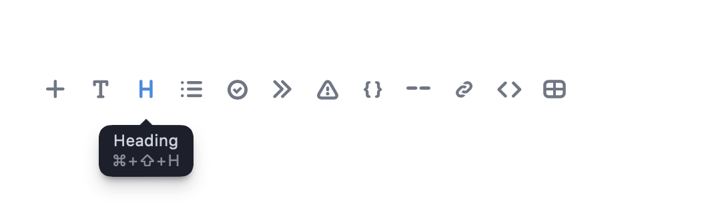
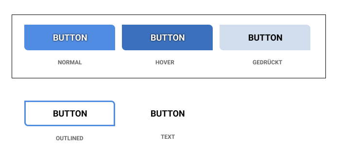

Day 5
Exercise & 1:1
- flex-box pt.II
- coding principles
- use all the things: MusicWiki
Day 6
Targeting Devices
- warmup: hello mars
- media queries
- inspector: mobile view
- the power of :hover
Warm Up
Create a page saying "Hello Mars" centered in the viewport. Use as little code as possible.
Task
Create a two column layout using flex-box. Use a mobile breakpoint to change the columns to rows.

Task
Creating a tooltip using the :hover pseudo-class
Day 7
Motion
- editor tuning: prettier & emmet
- css transforms
- css transitions
- css animations
Task
Create a yoyo using transforms and transitions. Play the yoyo by resizing the window.
Day 8
Grids, Forms, Tables
- CSS Grid
- HTML Forms
- HTML Table
Task: mondrian reprise
recreate a simple mondrian using css grid: use 3 boxes and a 6-column grid, red, green, yellow.
Task: Create an order form for ice-cream
Use https://jkorpela.fi/cgi-bin/echo.cgi as your form method. Switch between POST and GET
Day 9
A better way to write CSS: CSS Preprocessors
- SASS/SCSS
- debugging CSS
- svg & DOM
Task: create a set of Buttons
Use @mixin in SCSS to declare common properties
